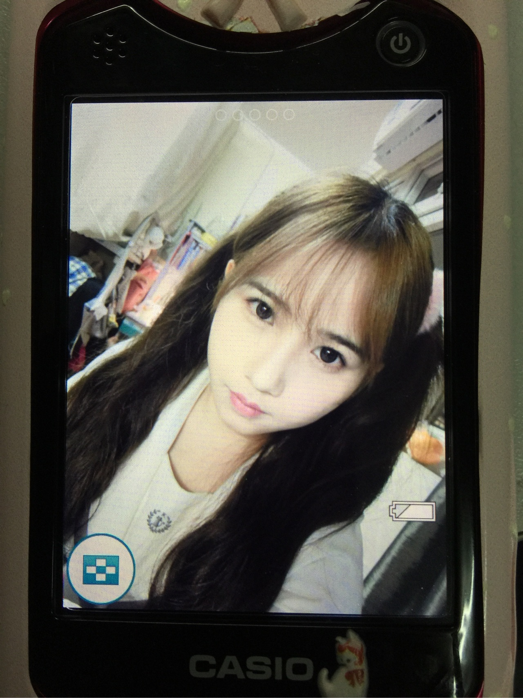

正文:
我要谢邀，显得我很有礼貌我现在直接跟别人说我15岁，对方还会很诧异地问：“你都15岁了？看不出来啊！”
存在感比较低，容易被轻视、无视什么的，大概是我时刻散发着我很无害很好欺负的气息，而且一看上去就很好说话。
经常被各种服务行业的不当回事儿，和朋友出去买东西啊吃饭啊啥的，如果服务员对她是毕恭毕敬，对我的态度就真的算随意了，有时候还被吼 。
然而我真的很好说话，只是次数多了就有点无语。
我也不知道该怎么办，要不你试试看装高冷？我是做不到了…
或者穿着打扮妆容什么的换一换？然而我穿上高跟鞋也才150+，还是小孩子
我放几张没有液化的自拍应该能看出脸肉肉的
这是素颜，那时候还不会化妆，只知道美图秀秀磨个皮

室友的神器，据说拍屏幕显得人更好看，我不太懂，感觉怪怪的hhhh